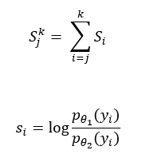

ChangePointDetectionRT
Real-time change-point detection typically uses the sliding window algorithm and assumes that the data follows a distribution, but has different parameters θ in different segments. In the two following hypotheses about the parameter,
H0:θ = θ0
H1:θ = θ1
the reference part has parameter θ0 and the testing part in the sliding window has parameter θ1, with the following notation:

This is the decision rule for testing the sliding window:
If Sjk < h0, choose H0.
If Sjk ≥ h0, choose H1.
The ChangePointDetectionRT function detects change points in a stochastic process or time series, using real-time change-point detection, implemented with these algorithms:
- Search algorithm: sliding window
- Segmentation algorithm: normal distribution
Use this function when the input data cannot be stored in memory, or when the application requires a real-time response. If the input data can be stored in memory and the application does not require a real-time response, use the function ChangePointDetection.
ChangePointDetectionRT Syntax
Version 1.3
SELECT * FROM ChangePointDetectionRT (
ON { table | view | (query) } PARTITION BY partition_expr ORDER BY order_by_expr
USING
TargetColumn ('value_column')
[ Accumulate ({ 'accumulate_column' | accumulate_column_range }[,...]) ]
[ SegmentationMethod ('normal_distribution') ]
[ WindowSize (window_size) ]
[ ChangePointThreshold (change_point_threshold) ]
[ OutputType ({ 'CHANGEPOINT' | 'VERBOSE' | 'SEGMENT' }) ]
) AS alias;ChangePointDetectionRT Syntax Elements
- TargetColumn
- Specify the name of the input table column that contains the time series data.
- Accumulate
- [Optional] Specify the names of the input table columns to copy to the output table.TipTo identify change points in the output table, specify the columns that appear in partition_exp and order_by_exp.
- SegmentationMethod
- [Optional] Specify the segmentation method, normal distribution (in each segment, the data is in a normal distribution).
- WindowSize
- [Optional] Specify the size of the sliding window. The ideal window size depends heavily on the data. Experiment with this value.
- ChangePointThreshold
- [Optional] Specify a DOUBLE PRECISION value that the function compares to ln(L1)−ln(L0). The definition of Log(L1) and Log(L0) are in ChangePointDetection. They are the logarithms of L1 and L0.
- OutputType
- [Optional] Specify the output table columns. The schema of the output table is Change-Point Detection Functions Output Table Schema, OutputOption ('CHANGEPOINT') in ChangePointDetection Output.
ChangePointDetectionRT Input
The input table has the same schema as the ChangePointDetection Input table.
ChangePointDetectionRT Output
The output table has the same schema as the ChangePointDetection Output table.
ChangePointDetectionRT Examples
ChangePointDetectionRT Example: ChangePointThreshold 10, Window Size 3, Default Output
Input
- Output table of ChangePointDetection Example: One Series, Default Options
SQL Call
SELECT * FROM ChangePointDetectionRT (
ON cpt PARTITION BY sid ORDER BY id
USING
TargetColumn ('val')
ChangePointThreshold (10)
WindowSize (3)
Accumulate ('sid', 'id')
) AS dt;Output
sid id cptid --- -- ----- 1 11 1 1 21 2 1 31 3 1 36 4
Download a zip file of all examples and a SQL script file that creates their input tables from the download tab  in the left pane.
in the left pane.
ChangePointDetectionRT Example: ChangePointThreshold 20, Window Size 3, VERBOSE Output
Input
- Output table of ChangePointDetection Example: One Series, Default Options
SQL Call
SELECT * FROM ChangePointDetectionRT (
ON cpt PARTITION BY sid ORDER BY id
USING
TargetColumn ('val')
ChangePointThreshold (20)
WindowSize (3)
OutputType ('VERBOSE')
Accumulate ('sid', 'id')
) AS dt;Output
sid id cptid difference --- -- ----- ------------------ 1 11 1 40764.17120423399 1 21 2 41833.897703948904 1 31 3 48358.16436132501 1 36 4 27.71258103679313
Download a zip file of all examples and a SQL script file that creates their input tables from the download tab in the left pane.
ChangePointDetectionRT Example: ChangePointThreshold 100, Window Size 3, Default Output
Input
- Output table of ChangePointDetection Example: One Series, Default Options
SQL Call
SELECT * FROM ChangePointDetectionRT (
ON cpt PARTITION BY sid ORDER BY id
USING
TargetColumn ('val')
ChangePointThreshold (100)
WindowSize (3)
Accumulate ('sid', 'id')
) AS dt;Output
sid id cptid --- -- ----- 1 11 1 1 21 2 1 31 3
Download a zip file of all examples and a SQL script file that creates their input tables from the download tab in the left pane.